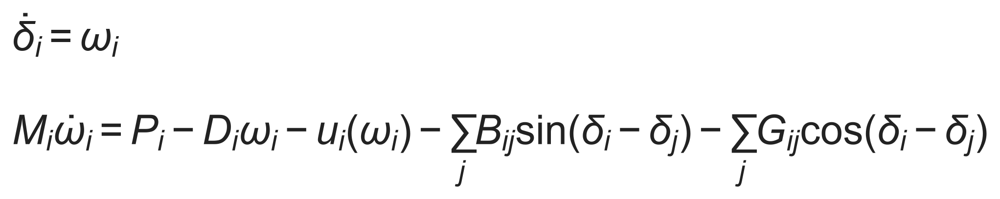
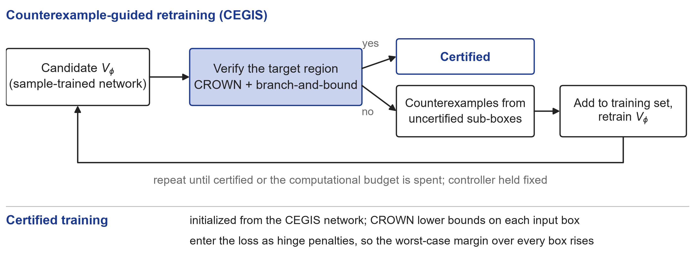

Learning Lyapunov Functions for Power System Transient Stability
Neural verification and retraining
TCCML workshop at NeurIPS 2026 · poster #240 · 10 minute recorded talk
Sehaj Randhir Singh
Queens High School for the Sciences at York College, NY · sehajrsinghs@gmail.com
Wenqi Cui
New York University, NY · wenqicui@nyu.edu
Results: simulation on the Kron-reduced New England 39-bus swing model01
TCCML · why this matters02
Renewables shrink the inertia that gives the grid time to recover.
- Transient stability: after a large disturbance, every generator either settles back to synchronous operation or loses synchronism. It is a question about every post-fault state, not an average.
- Wind and solar displace synchronous generation, reduce system inertia, and tighten the stability margins an operator can accept. The margins matter more exactly when there is less rotational energy to lean on.
- Classical direct methods certify stability with a Lyapunov function. For networks with resistive losses, an exact one in closed form is generally unavailable (Chiang 1989).
- So the candidate function gets learned as a neural network. And then a new question appears: how do you prove a learned function holds on a continuous region, not just where you checked?
The claim this talk builds
More wind and solar means less synchronous inertia, so the window in which a disturbed system must be pulled back gets narrower. For that grid, passing sampled tests is not the standard. The standard is a proof over a set of states. This work is about producing exactly that proof for a learned Lyapunov function, and only counting it when a verifier signs it.
Chiang 1989; Cui 202202
The model03
The swing equation with losses, on a Kron-reduced 10 machine network.

u_i(w_i) = sat(c_i w_i) saturated droop
x = (d, w) in D subset R^20 n = 10 generators
f_cl(x*) = 0 isolated equilibrium
- d_i and w_i are the rotor angle and frequency deviations of generator i; M_i and D_i are inertia and damping, P_i the net mechanical power input.
- The lossy detail that causes the problem: the conductance term sum_j G_ij cos(d_i − d_j) is generally not the gradient of any scalar potential. Classical energy function constructions need that gradient, so for a lossy network there is no analytical Lyapunov function in general.
- Test case: the New England 39-bus system, Kron-reduced to its 10 generator buses. The uniform angle-shift invariance is removed with reference-subtracted coordinates.
- Everything downstream verifies this closed loop dynamics f_cl directly.
Athay 1979; Chow 1992; paper Eq. 103
Lyapunov conditions04
An energy that is positive and decreasing. At every state.
G(x) = V(x) − V(x*) > 0 positivity
V̇(x) = ∇V(x)ᵀ f_cl(x) < 0 decrease
exponential: V̇(x) ≤ −β (V(x) − V(x*)),
β > 0
- Strict inequalities cannot hold at the equilibrium itself, so certification happens on compact regions that exclude a small ball around x*.
- A family we use: the level-set annulus { x : c_in ≤ V(x) ≤ c_out }, a ring in the level sets of V around x*.
- If both conditions hold on a region, every trajectory started there decreases in V toward the equilibrium. The word doing all the work is every: it is a claim about a continuum of states.
V is a neural network V_φ; G is the positivity margin04
Learned candidates05
Learn V as a small neural network by penalizing sampled violations.
- Setup, following Cui 2022: draw states from the operating domain, penalize violations of the positivity and decrease conditions at those states, train. The candidate V_φ is a single-hidden-layer ELU network.
- Cost: 4,000 steps on a single CPU core, 28 seconds. Cheap, and that matters later, because we will retrain it many times in a loop.
- Where we look: the two dimensional slice of generator 5, the plane (d5 − d5*, w5 − w5*), with all other states held at their equilibrium values. The full state is 20 dimensional; the slice lets us draw the conditions and their certified regions directly.
- This sample-trained network is the empirical benchmark that the verifier will be run on.
What a certificate has to be
Sample-based training says: at the points I drew, the conditions hold. A certificate says: for every state in this continuous region, the conditions hold. Those are different quantifiers. A finite sample measures typical behavior; a region of undetected violation can have arbitrarily small measure under the sampling distribution and still be a real hole in the proof.
Next slide: that gap is not hypothetical. We measured it.
Cui 2022 sample-based procedure; training details in the paper appendix05
Why sampling is not proof06
One network, two measurements. It passes the first and fails the second.
Measurement 1 · uniform random evaluation
200,000 states drawn uniformly over the region.
Decrease condition satisfied on
99.98%, positivity on
100%. No violation of the decrease condition detected. Maximum Lyapunov derivative observed:
−9.6 (comfortably negative).
By this measurement the network looks verified.Measurement 2 · look for trouble on purpose
A
PGD attack ascends the Lyapunov derivative from random starts:
6.1% of initializations end at states that violate the decrease condition, with the derivative reaching
+199.9. The CROWN verifier confirms genuine counterexamples: a decrease violation with
V̇ = +5.22, and a positivity violation, a state with
V(x) < V(x*).
Same network, same region. The violating states sit in pockets of negligible measure under uniform sampling, so 200,000 draws never landed in one. Verdict: this network certifies nothing, ρ = 0.
Numbers from the paper appendix; the two measurements are kept separate on purpose06
The verifier, part 107
CROWN bounds the margin over a whole box, not a point.
- Evaluating the network at samples describes those samples. A verifier instead takes a box B, an interval per coordinate, and reasons about all x inside it.
- For each nonlinear operation, CROWN first finds the range its input takes over B, then encloses the operation between two linear functions, one above it and one below it. Propagating those enclosures backward through the graph, from output to input, yields a linear lower bound on the margin, whose minimum over a box is closed form.
- Sound: the bound can be conservative, but no state in the box can break it, including states nobody ever drew.
- The same machinery covers general computation graphs and the exact blocks in our graph: ELU activations, sine, cosine, and multiplication (Shi 2024).
lᵀx + l_b ≤ h(x) ≤ uᵀx + u_b for all x in B
min of a linear function over B is closed form
⇒ sound lower bound h̲(B) on h
Zhang 2018; Xu 2020; Shi 202407
The verifier, part 208
Split what is inconclusive. One graph holds the network and the physics.
- Linear enclosures are tight on small boxes and loose on large ones. A single bound over a big box is often inconclusive: lower bound negative, although no violating state exists.
- Branch and bound splits such a box and bounds every sub-box again. It stops one of three ways: every piece certified; a state with a negative margin found, kept as a counterexample; or the budget spent, and the region reported not certified.
- One computation graph: V_φ, its analytic gradient ∇V_φ, the controller, and the swing dynamics f_cl all live in the same graph. What the verifier proves, it proves about the model we actually run, not about a linearization of it.
Outcomes: certified, or a concrete counterexample state, or not certified. Never "looks fine".
Three margins, verified on every sub-box
G_φ(x) = V_φ(x) − V_φ(x*)positivity. Certified when its lower bound is strictly positive.
F_φ(x) = −V̇_φ(x)
decrease. Certified when nonnegative everywhere.
F_φ,β(x) = −V̇_φ(x) − β (V_φ(x) − V_φ(x*))
exponential decrease at rate β.
A box counts as certified only when all its sub-boxes clear their margins.
Verification graph: V_φ, ∇V_φ, controller, f_cl08
Method 1 · CEGIS09
Counterexample-guided retraining: the verifier writes the hard examples.

- Start from the sample-trained V_φ. Verify the target region with CROWN and branch and bound.
- On failure, pull candidate counterexamples out of the uncertified sub-boxes into a cumulative training set, retrain, verify again. Repeat until certified or the computational budget is spent.
- The controller is held fixed throughout. Only V_φ is updated.
- The verifier is the only source of counterexamples. They are found, never assumed.
Counterexample-guided inductive synthesis; verifier in the outer loop only09
Method 2 · certified training10
Make the verifier's own bound a differentiable term in the loss.
penalty per box B_k:
max { 0, m − h̲(B_k) }
averaged over the boxes that partition the region
- Run CROWN on each input box inside the single verification graph. The bound h̲ is differentiable in φ, the parameters of V_φ, because the whole graph is.
- So backpropagation raises the worst-case margin over every box, instead of the margin at sampled points. A hinge pushes any box whose certified margin falls below a target m.
- A box whose bound stays negative is split during training, so the partition refines exactly where certification is hardest.
- Warm start: certified training begins from the network the CEGIS loop produced, and both methods are scored by the same final standalone verification.
How ρ is measured (the protocol behind the table)
Region: a square on the slice, d5 − d5* in [η, η+ρ] and w5 − w5* in [η, η+ρ], with offset η = 0.05 to stay away from x*. Other states at equilibrium.
Grid: ρ in {0.5, 1.0, 1.5, 2.0, 2.5}, swept upward, first failure stops.
Certified means: branch and bound at zero tolerance, plus an independent PGD search inside the square that finds no violating state. 30 s of branch and bound per grid value.
Honesty note: ρ = 0 means even the smallest square failed. 2.5 is the largest grid value, so a 2.5 entry is limited by the grid, not by a failed certificate.
Certified training follows Shi 2024; same verifier, same protocol for both methods10
Results11
Verification-guided training turns ρ = 0 into a certified region.
| Five seeds | Sample-based | CEGIS | Certified training |
|---|
| Certified scale ρ | 0.0 | 1.8 ± 0.24 | 2.5 (all seeds) |
| Attack violation rate | 6.1% | 0 in region | 0 in region |
| Exponential rate β | n/a | 3.97 | 3.97 |
- 6.1% is the PGD attack violation rate of the sample-trained network. Inside every certified region, the same attack finds nothing.
- Both guided methods land on the same verified rate β = 3.97. The benefit of certified training is a bigger certified region, not a faster rate.
- In the CEGIS loop, the principal gain arrives after the first counterexample-retraining step and then holds across iterations.
- For the network drawn at right, decrease certifies out to ρ = 2.0 and positivity out to ρ = 2.5, both with positive margins.
Main table (five seeds); fields on the generator-5 slice, red/dark where V̇ > 011
Certified annulus12
The shape of the guarantee: a ring around the equilibrium, on all five seeds.
- The strict decrease condition cannot hold at x*, so the certificate excludes a small neighborhood and covers the annulus around it: a square annulus, the outer box cut into a 3 by 3 grid with the centre cell removed, 8 rectangular tiles.
- Geometry, from the committed E10 results: outer ring d5 in [0.1089, 0.7089] rad (6.2° to 40.6°), w5 in [−0.4, 0.4] Hz; excluded neighborhood ±0.015 rad and ±0.02 Hz.
- All five seeds certify every tile, 8 of 8, and the outer box stays inside the linear droop band (±0.4 Hz against saturation at 0.453 Hz).
- The annulus construction enlarges the certified region versus verification without it. Smaller holes came back "unknown" under the same budget, not refuted.
- Reading the hole: it is not instability. The guarantee is that trajectories initialized inside the verified annulus decrease toward the excluded neighborhood of x*.
Geometry and per-seed certifications read from results/annulus_e10_report.md12
Independent checks13
Three tools that do not share our pipeline checked the certificates.
Check 1 · adversarial
PGD audit
Projected-gradient attacks search each certified region, ascending the margins from many random starts. They find
no feasible violation inside any region we claim. On regions we report as failed, attacks find the violations.
Check 2 · another verifier
JacobianOP
A second verifier that expands the gradient nodes internally, instead of accepting our analytic-gradient graph. It found
no soundness contradictions on the 24 tested boxes.
Check 3 · SMT
dReal
The SMT solver dReal at tolerance δ = 10
−3 returns
unsat on the certified regions and
sat, with the matching counterexample, on the failed ones.
These checks do not remove every implementation risk, but they give independent evidence that both the successes and the failures are genuine. Each reported certificate and each reported failure is checked by a method other than the verifier that produced it.
Procedures in the paper appendix13
What this is not14
Honest limits: a slice, a cost that grows with dimension, a fixed controller.
Slice, not the full state
The certificates live on the two dimensional generator-5 slice, with the other nine generators held at equilibrium. That is a faithful projection of the model, not a certificate for the full system.
Branch and bound does not scale for free
Its cost can become prohibitive as the state dimension grows. In our own runs, certifying the full ρ = 2.5 square took on the order of 10 sub-domains at 2-D, and widening the slice to 4-D already pushed that to 35 to 61. Going to 9 or 18 more dimensions as-is is not on the table.
The controller is fixed
Training updates only V_φ; the controller and plant stay fixed, so nothing here measures robustness to model error. The certificate is only as good as the swing model behind it.
What we would try next
Compositional or decentralized certification: build local certificates per generator or per subsystem and combine them, so the proof scales with the network rather than the dimension. Integrating that with certified training is the open question.
Everything shown is simulation on the Kron-reduced New England system. A slice-level certificate is not authorization to act on a physical grid.
This transparency is part of the contribution: caught at 99.98%, certified where it matters14
Takeaways15
Samples cannot prove stability on a continuous region. Verification can.
Finding 1
200,000 ≠ proof
The sample-trained network satisfied the decrease condition on 99.98% of 200,000 uniform draws and still contained genuine violations: V̇ = +5.22, and a state with V below its value at equilibrium.
Finding 2
ρ: 0 → 2.5
Counterexample-guided retraining reaches ρ = 1.8 ± 0.24; certified training reaches ρ = 2.5 on every seed, all at the verified exponential rate β = 3.97, audited by attacks and by independent solvers.
Next
2-D → full state
Scale the proof from one slice to the whole system. The direction: compositional and decentralized verification, combined with the certified training loop.
Thank you. Poster #240, and happy to dig into any of this.
sehajrsinghs@gmail.com · wenqicui@nyu.edu
TCCML at NeurIPS 202615
1 / 15